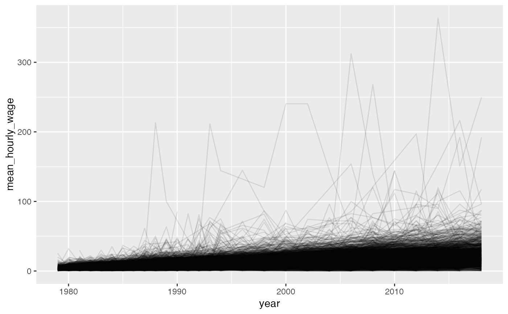

R/wages_hs2020.R
wages_hs2020.RdA data set contains longitudinal data of mean hourly wages along with several demographic variables of Americans from the National Longitudinal Survey of Youth (NLSY79) held by the U.S. Bureau of Labor Statistics from Round 1 (1979 survey year) to Round 28 (2018 survey year). The cohort provided in this data set is the highest grade completed, up to 12th grade, and participated in at least five rounds of surveys.
wages_hs2020
A data frame with 103,994 rows and 15 variables:
A unique individual's ID number. This is the key of the data.
The year the observation was taken. This could be the index of the data.
The mean of the hourly wages the individual gets at each of their different jobs. The value could be a weighted or an arithmetic mean. The weighted mean is used when the information of hours of work as the weight is available. The mean hourly wage could also be a predicted value if the original value is considered influential by the robust linear regression as part of data cleaning.
The age of the subject in 1979.
Gender of the subject, FEMALE and MALE.
Race of the subject, NON-BLACK,NON-HISPANIC; HISPANIC; BLACK.
Highest grade completed.
Integer of highest grade completed.
The year when the highest grade completed.
Number of jobs that an individual has.
The number of hours the individual usually works per week.
Whether the mean hourly wage is weighted mean, using the hour work as the weight, or regular/arithmetic mean. TRUE = is weighted mean. FALSE = is regular mean.
Whether the mean hourly wage is a predicted value or not.
The U.S. Bureau of Labor Statistics. (2021, January 6). National Longitudinal Survey of Youth 1979. https://www.nlsinfo.org/content/cohorts/nlsy79/get-data
# show the data wages_hs2020#> # A tibble: 103,994 x 13 #> id year mean_hourly_wage age_1979 gender race hgc hgc_i yr_hgc #> <int> <int> <dbl> <int> <fct> <fct> <fct> <int> <int> #> 1 2 1979 3.85 20 FEMALE NON-… 12TH… 12 1985 #> 2 2 1980 4.57 20 FEMALE NON-… 12TH… 12 1985 #> 3 2 1981 5.14 20 FEMALE NON-… 12TH… 12 1985 #> 4 2 1982 5.71 20 FEMALE NON-… 12TH… 12 1985 #> 5 2 1983 5.71 20 FEMALE NON-… 12TH… 12 1985 #> 6 2 1984 5.14 20 FEMALE NON-… 12TH… 12 1985 #> 7 2 1985 7.71 20 FEMALE NON-… 12TH… 12 1985 #> 8 2 1986 7.69 20 FEMALE NON-… 12TH… 12 1985 #> 9 2 1987 8.79 20 FEMALE NON-… 12TH… 12 1985 #> 10 2 1988 6.67 20 FEMALE NON-… 12TH… 12 1985 #> # … with 103,984 more rows, and 4 more variables: number_of_jobs <int>, #> # total_hours <int>, is_wm <lgl>, is_pred <lgl># turn the data into a tsibble object library(brolgar) wages <- as_tsibble(x = wages_hs2020, key = id, index = year, regular = FALSE) # create the spaghetti plot of the data library(ggplot2) ggplot(wages) + geom_line(aes(x = year, y = mean_hourly_wage, group = id), alpha = 0.1)